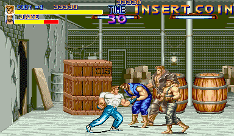
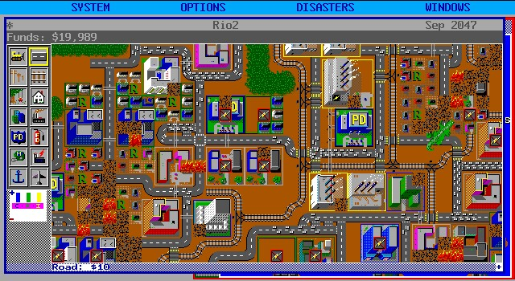
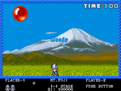

>
Durante este año Capcom lanza juegos como Final Fight o
Captain Commando. Y SEGA da a conocer el genial Golden Axe.
<
>
Llega la portátil más famosa de todos los tiempos. Nintendo lanza la Game Boy.
Se trataba de la evolución de las Game & Watch, pero a diferencia de éstas,
la Game Boy permitía insertar cartuchos con juegos intercambiables.
El más famoso fue el Tetris.
<

>
Aparece Sim City, un simulador de construcción de ciudades en el cual ejercemos el
papel de alcalde y tenemos que crear industrias, zonas residenciales y servicios.
Teníamos muchos factores a tener en cuenta como la seguridad, diversión, felicidad, etc. de los ciudadanos.
Este juego tuvo un tremendo éxito y supuso la creación de un subgénero dentro de la estrategia.
<

>
Capcom también lanza el exitoso Pang!, en Estados Unidos conocido como Buster Bros.
En el juego cada fase empieza con un cierto número de globos de distintos
tamaños, que al tocar al personaje le quitan una vida. Tendremos que
usar nuestra arma para disparar a las bolas y hacer que se dividan en
otros trozos más pequeños hasta que desaparezcan.
<